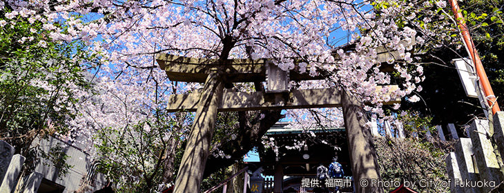
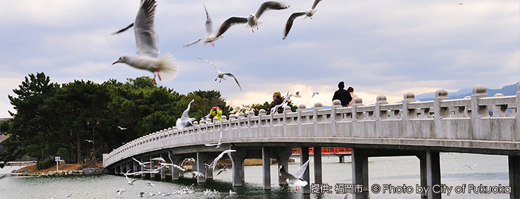
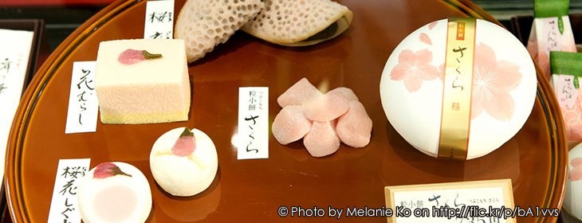
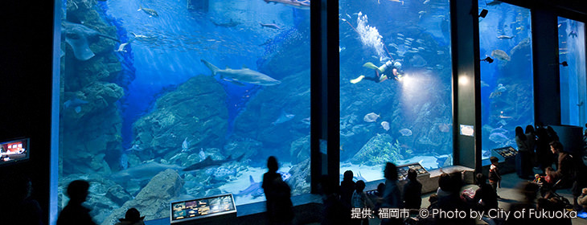
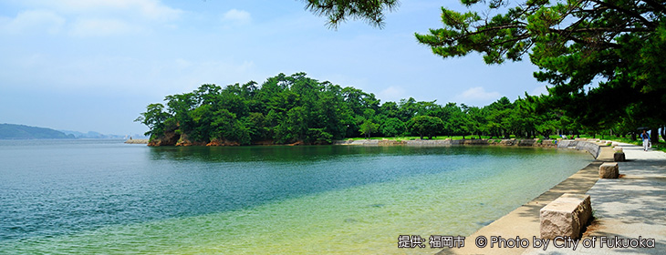
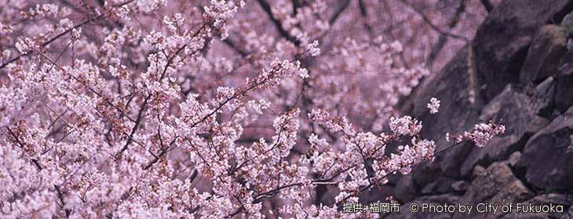
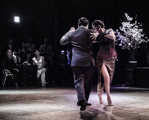

世界で最も住みやすい25の都市ランキング12位、国連アジア太平洋経済社会委員会 (ESCAP)からアジア100万都市の開発モデルとして位置づけられた福岡市。 フェスティバル期間中には福岡城さくらまつりも開催されます。県外から参加される皆さん、この機会に福岡の魅力も存分に味わってください。
福岡・博多の観光情報が満載！
クリックしてウェブサイトへ
ホテル予約サイトの宿泊料金を一括比較
Hotels Combinedサイトへ
西鉄バス・電車時刻表、おすすめ情報
クリックしてウェブサイトへ
地下鉄路線図・時刻表案内
クリックしてウェブサイトへ
園内の各エリアで「城壁とさくら」のライトアップ
クリックしてウェブサイトへ
フェスティバル公式
スペイン・中南米料理レストラン
情報を見る
桜の季節に開催する「桜タンゴフェスティバル」は国内外のタンゴ愛好者、
タンゴに興味のある方々が国境を越えた交流を楽しめる6日間。
アルゼンチンタンゴが誕生して100年以上。国外にその存在が知られるようになってからも、50年ぐらい前までは、「タンゴは鑑賞するもの」として、人々は劇場でコンサートを聴き、ステージ上で繰り広げられるダンスを鑑賞し楽しむ芸術と捉えられていました。
そのタンゴがここ20年ほどの間に大きな発展を遂げ、今ではコミュニケーションの手段として世界の人々に親しまれています。
「観るもの」から「もっと身近に自分が踊って楽しむ」ものへ。
2009年にユネスコ世界無形文化遺産に登録されたことで世界的にもますますタンゴ熱が高まる中、今や文字通り ”世界中”でタンゴフェスティバルが開催されるようになりました。インドネシアのバリ島、台湾、韓国、中国、ロシア、米国やカナダ、フィンランドの小都市など、風土、土地柄を異にする様々な場所に世界各地のタンゴファンが集い、”ダンス”という共通言語を介してコミュニケーションを楽しんでいます。タンゴが民族・国籍・文化・世代の違いを超えた人との繋がりを生みだしているのです。
ラテン文化センター ティエンポでは1997年の設立以来、言葉を介さないコミュニケーションツールとしてタンゴを日本に紹介する草分け的活動を行ってきました。今ではタンゴを踊り楽しむ方々が多くいるなかで、アジアの玄関口福岡では、これまで国内外のタンゴ愛好者が集うフェスティバルが開催されたことがありませんでした。
そのような経緯から2014年3月28日から30日の3日間に渡り開催した当団体主催の九州初のタンゴフェスティバル「SAKURA TANGO FESTIVAL in 福岡～ Abrazo de Asia 桜とアジアとタンゴ～」。初年度にも関わらず、アジア各国からダンサー、タンゴ愛好家、また初めてタンゴという文化に触れる方々にも多く参加いただき、まさにタンゴでアジアが結ばれた交流の3日間となりました。
世界中で開催されている数多くのタンゴフェスティバルでは他国のタンゴファンとの交流を楽しむため、世界各地へ出向き、ダンスを通しての交流を楽しんでいます。「桜タンゴフェスティバル」では、主に本場のアーティスト、アジアと日本のタンゴ愛好者の交流の場として、またアルゼンチンタンゴを知らない方々にもタンゴのアブラソ (抱擁) を通して心の通い合いを楽しむアルゼンチンタンゴの醍醐味を体験してもらえる場として、今後も福岡で継続し開催していければと願っております。
| • タイトル | 第6 回 桜タンゴフェスティバル in 福岡 -Abrazo de Asia 桜とアジアとタンゴ- |
| • 日程 | 2019年 3月 28日 (木) ～ 3月 31日 (日) - 4日間 - |
| • 会場 | Dining Event Space "TIEMPO HALL" 電気ビルみらいホール ※ 各プログラムにより異なる |
| • 主催 | 特定非営利活動法人ティエンポ・イベロアメリカーノ (ラテン文化センター ティエンポ) |
| • 協力 | 株式会社エフエム福岡 電気ビルみらいホール |
| • 後援 | 福岡県 福岡市 （公財）福岡市文化芸術振興財団 在日アルゼンチン共和国大使館 駐日ウルグアイ大使館 LOVE FM (ラブエフエム国際放送株式会社) |
「桜タンゴフェスティバル in 福岡 ～ Abrazo de Asia 桜とアジアとタンゴ～」
タイトルの由来と開催時期について
地球の反対側で生まれ、世界中たくさんの人々を魅了している芸術、アルゼンチンタンゴ。それは、Un romance de tres minutos ～ たった3分という短い間に描かれる男女のロマンス。
ペアを組み、お互いの気や微妙な動きを感じながら、言葉を介さないコミュニケーションで創り上げていく即興のペアダンス。その束の間の出会い、心の通い、一度きりかもしれないダンスのひと時を多くのタンゴ愛好者は楽しんでいるのではないでしょうか。
男女が紡ぐ儚く、美しい物語。それは、まるで命をかけて美しく咲き誇り、潔い散り際さえも日本人を魅了する桜のよう。。。
福岡タンゴフェスティバルを開催するにあたり、日本文化の象徴のひとつと言える桜の季節を選びました。日本人は、「もののあはれ」という他国にはない独特な美的観念を持つと言われています。
四季折々、自然を愛でる慣習のある日本人。なかでも花見の時期が近付くと、なぜか心が弾む。日本人にとって桜は日本を代表する花というだけではなく、他の花とは別格の美しさを見出します。3、4日に命をかけて美しく咲き誇り、潔く散っていくその姿に人生を投影し、物事のはかなさや潔さを感じてきました。また、桜の花の咲く頃には、必ず、別れ、出会いがあり、人生の節目を迎え、人それぞれ特別な思いで桜の花を見ることから、その美しさが胸に刻まれるのでしょう。
人種や文化、母国語の違いを超え、”タンゴ”という共通言語を介したひと時のコミュニケーションに興じることを知るタンゴ愛好者には、桜を愛でる日本の文化とタンゴに共通する美しさや感情を共有し、共に楽しんでいただけるのではないでしょうか。
桜の下に人が集うお花見のように、桜の季節にアジア各地のタンゴ愛好者が会する。満開の桜のように、美しいタンゴの交流を一人でも多くの方に体験していただきたいと願っております。
“異芯伝心～違いを分かち合う”… をテーマに21年
「自分と違う」ことに背を向けず、互いの違いを分かち合いながら、自分自信を豊かに成長させていく。。。
1997年に設立したラテン文化センター「ティエンポ」は、人種や言葉、年齢、性別などの壁を超えたボーダーレスなマインドでの異文化交流 “異芯伝心” をテーマに、ラテン諸国の多彩な文化を、舞踊・アート・音楽・言語・食といった様々な角度から体験し、交流を図れる活動を推進しています。
文化を通しての交流は、異文化を知識として得るのではなく、異なる地で生まれ、異なる歴史を持ち、異なる自然に育まれた文化を体感し、経験することです。
言語のみによるコミュニケーションでは誤解や理解し難いことでも、見る・触る・聞く、などの五感を用いることにより、文化の持つ深い意味に更に近付けるのではないでしょうか。
また、情報、通信技術の急速な発達により、世界中の出来事が瞬時に伝わり、情報交換ができる便利な現代。しかしその反面、一人一人が孤立しやすくなり、人と人とが肌を触れ合ってコミュニケーションをとる機会が激減しているのも事実です。そのようなデジタル化時代だからこそ、ラテン文化センター「ティエンポ」では人と人とが生の実感と喜びに溢れた時間を共に楽しめる文化交流活動を促進していきたいと多種多様な活動を行っています。
アフターミロンガやワークショップの会場となる 「ティエンポ・ホール」(3階) と同じビルの5階には、フェスティバルを主催するラテン文化センター ティエンポが運営するカフェレストラン 「サンチョ・パンサ」が併設されています。
国際色豊かなシェフ達が腕を振るうスペイン、中南米の本格的家庭料理を、ラテンの空気が感じられる温かい空間で味わえるレストランです。
アジア各地からタンゴ愛好者が集まる桜タンゴフェスティバル開催期間中の4日間はタンゴの雰囲気を存分に演出し、アルゼンチン料理のスペシャルプレート、チョリパンやエンパナーダなどアルゼンチン本場の味、ワインもお楽しみいただけます。お気軽にご来店ください。


【3/29 (木)】
ランチタイム: 11:30 - 14:30
ディナータイム: 18:00 - 23:30
【3/30 (金) ～ 4/1 (日)】
ランチタイム: 11:30 - 16:00 (オーダーストップ 16:00)
ティータイム: 16:00 - 18:00
ディナータイム: 18:00 - 24:00 (オーダーストップ 23:30)
フェスティバルに関するお問合せ

(特定非営利活動法人 ティエンポ・イベロアメリカーノ)
〒810-0041
福岡市中央区大名1-15-11 Daimyo11511ビル 3F
092-762-4100 | 092-762-4104
www.tiempo.jp
sakuratangofestivaltiempo.jp
月 ～ 金: 12:00 - 22:00 / 土・日: 12:00 - 18:00 (休館日不定)
お問合せフォーム